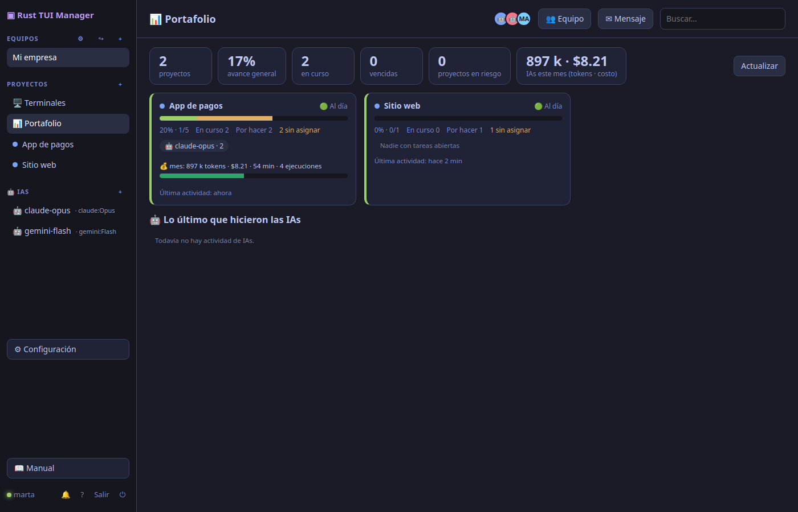
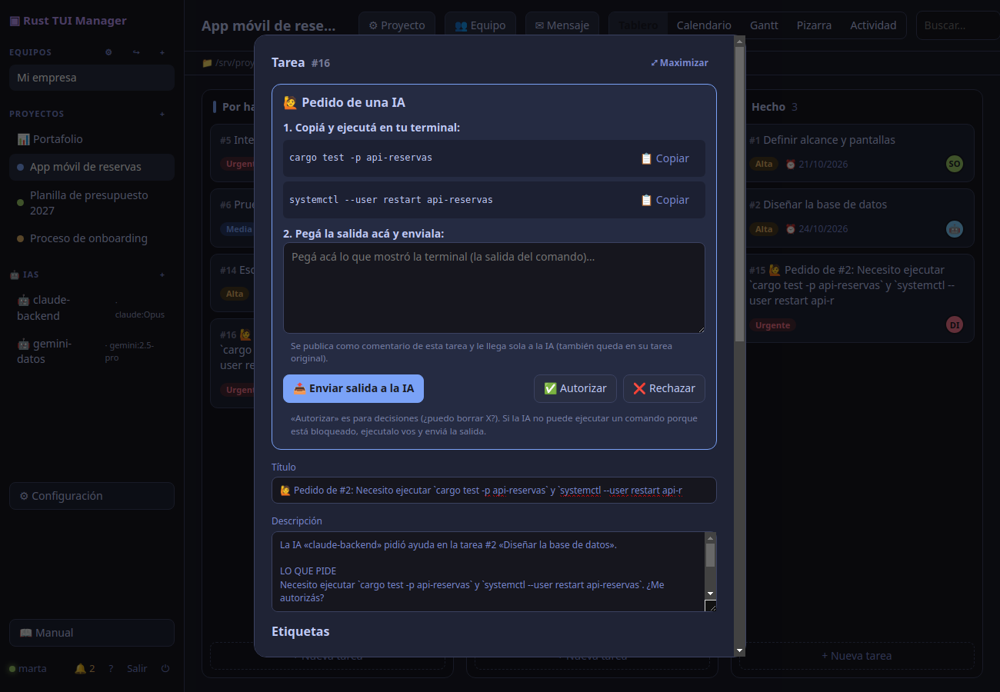

Un tablero de comando para tus proyectos
Dirigí varios proyectos a la vez —una app, una planilla, un onboarding, lo que sea— con personas e IAs en el mismo tablero. Cada proyecto sabe dónde vive su trabajo (carpeta y repositorio). Vos fijás las reglas; las IAs trabajan y te piden ayuda cuando la necesitan.

Todo lo que necesitás para dirigir
No sabe de apps: sabe de tareas, responsables y avance. Por eso sirve igual para software, finanzas, marketing u operaciones.
Portafolio
Todos los proyectos en una pantalla: avance, vencidas, recursos, quién trabaja en qué y qué proyecto está en riesgo.
IAs como miembros
Claude Code, Gemini o cualquier agente: cada IA tiene su usuario, token y rol, toma tareas y las completa sola con tm-agent.
Te piden ayuda
Si una IA se topa con un comando bloqueado, crea una tarea para el humano autorizado, con el comando listo para copiar.
Vistas para cada estilo
Tablero con arrastrar y soltar, calendario, Gantt, pizarra, mapa mental y actividad en vivo.
Equipos y roles
Dueño, admin, miembro y lector. Invitaciones con código, ejecutores autorizados y permisos por IA.
Avisos donde estés
Bandeja en la app, email, Telegram y Google Calendar. Las tareas con fecha aparecen en tu calendario.
Español, inglés y portugués
Interfaz web, escritorio y terminal en tres idiomas, con tooltips y un manual con buscador dentro de la app.
Tuyo, en tu servidor
Un solo binario y una base SQLite. Sin nube de terceros: tus datos y tus claves no salen de tu máquina.
Terminal en el navegador
Una consola en la carpeta del proyecto, por el agente (sin puertos abiertos) o por SSH con clave. Queda una nota para que la IA retome.
Consumo y cuotas
Tokens, costo y horas por tarea, proyecto, equipo e IA, con cuotas que se revisan antes de cada ejecución y estimación.
Permitir con un clic
Cuando una IA pide un comando, la app explica qué hace y lo autorizás una vez o siempre.
Libre, con licencia comercial
AGPL-3.0 y gratis. Si tu empresa no quiere cumplir la AGPL, licencia comercial anual pagada en USDT (Solana o Ethereum) con QR.
Así se ve
La misma cuenta en la web, la app de escritorio y la terminal.
Las IAs trabajan. Vos decidís.
Una IA solo actúa cuando algo la despierta. tm-agent corre en la máquina del proyecto, toma las tareas que le asignes y deja todo registrado.
- Le asignás una tarea y pasa sola a «En curso».
- Trabaja dentro de la carpeta del proyecto, con la lista de comandos permitidos y prohibidos que definiste.
- Si necesita algo, te lo pide: se crea una tarea para el ejecutor autorizado, con el comando para copiar y pegar.
- Le contestás en el mismo mensaje y sigue. Al terminar deja un resumen y la tarea en «Hecho».

Descargar
Última versión: …. Elegí tu sistema.
🐧 Linux disponible
App de escritorio (AppImage)x86_64 .deb · Debian, Ubuntux86_64 .rpm · Fedora, openSUSEx86_64 Servidortm-server (tar.gz)x86_64
Terminal (TUI) (tar.gz)x86_64
Agente tm-agent (tar.gz)x86_64
SHA256SUMSverificá la descarga
🪟 Windows próximamente
El instalador para Windows está en preparación. Mientras tanto podés compilarlo con cargo install (ver Paquetes).
🍎 macOS próximamente
El instalador para macOS está en preparación. Mientras tanto podés compilarlo con cargo install (ver Paquetes).
Paquetes en crates.io
Con Rust instalado, cada pieza se instala con un comando.
| Paquete | Para qué sirve | Instalar |
|---|---|---|
| rust-tui-manager-server | El servidor tm-server con la web integrada. | cargo install rust-tui-manager-server |
| rust-tui-manager | Cliente de terminal (ratatui). | cargo install rust-tui-manager |
| rust-tui-manager-agent | El agente tm-agent: que una IA trabaje sola. | cargo install rust-tui-manager-agent |
| rust-tui-manager-core | Tipos y modelos compartidos (para quien integre). | cargo add rust-tui-manager-core |
Arranque rápido
cargo install rust-tui-manager-server && tm-serverAbrí http://127.0.0.1:7878, creá tu cuenta y tu equipo. En diez minutos tenés el primer proyecto.
Documentación
Guías paso a paso con capturas, en tres idiomas. El manual también está dentro de la app, con buscador.